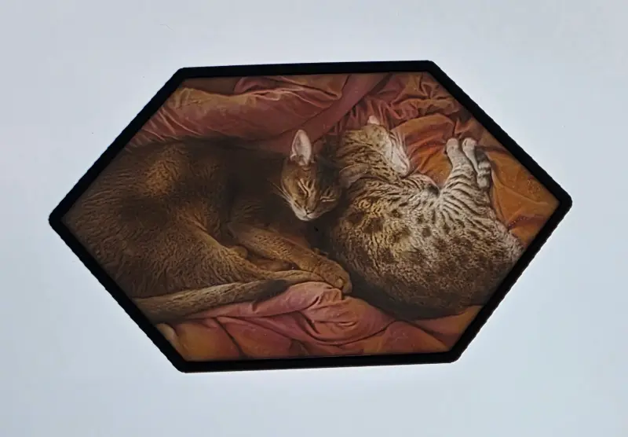
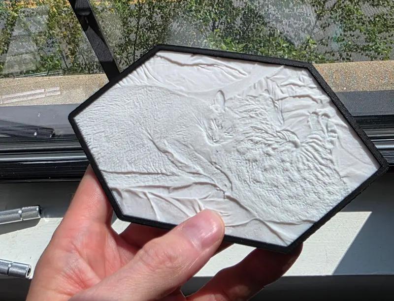
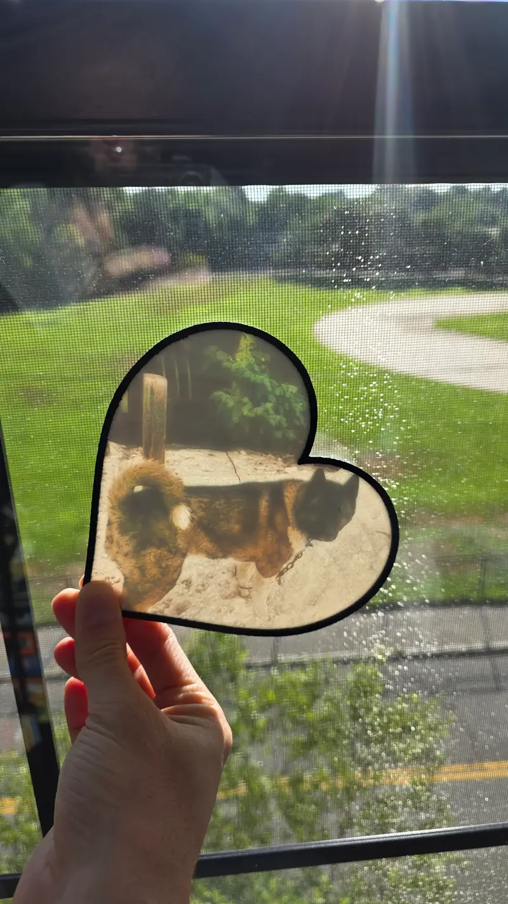

Standard CMYK generators turn skin tones into magenta splotches, so I ported an open-source color lithophane engine to the browser.
About the project
The first lithophane I tried to print was a photo of my partner and me in a sunflower field. I ran it through a standard CMYK generator at least half a dozen times, and every print came back with magenta splotches across our faces. Four filaments cannot make a skin tone, and the generators only output flat rectangles anyway. Photos of couples were the whole reason I wanted to do this, so the skin tones had to be right.
I ported the open-source PIXEStl engine to run in the browser and built the interface I actually wanted around it: import a photo, overlay a custom mask so the print is not stuck as a rectangle, set the filament colors and depths, and export the files. Early prints on the X1C had a persistent micro-gap along the right edge between the image and its border. It took several failed attempts to close it. The calibration tools were cluttering the main screen, so I split them out into a companion app, LithoPalletGen, that handles the color mapping.
The sunflower photo prints correctly now. At the time of writing I have printed around two dozen lithophanes through it, all from a browser tab with nothing behind it, with extra filament colors dialed in for skin. Backlit, they match the source photos.
- LLM Integration
- TypeScript
- FDM 3D Printing
Gallery






